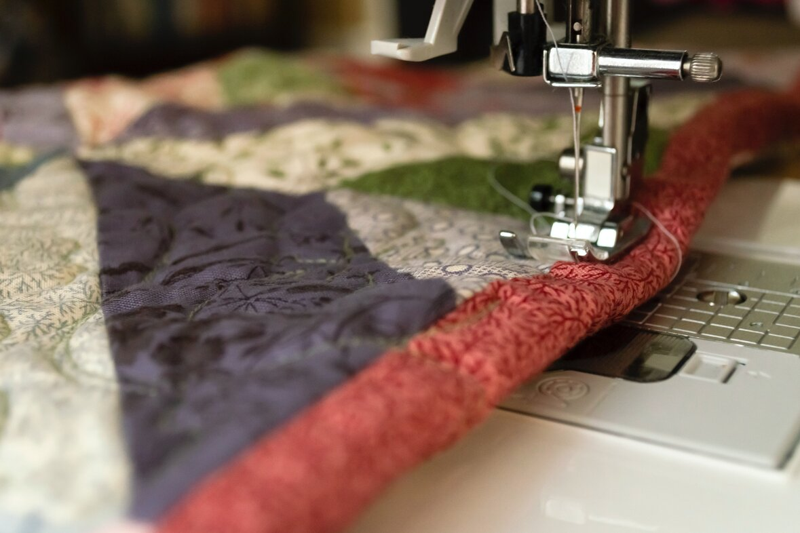

Chuck Reviews Quilts and Fabric
In case you didn't know, I am a quilt enthusiast! I love everything about quilts. I love the fabric, the thread, the binding, I just love everything about them! Because I love quilts so much, I am going to review some of my favorites! Please enjoy!! :)


One of my most favorite things about a quilt is the binding of the quilt! Binding a quilt is a really tough ting to do, so when I see a beatifuly bound quilt I get a warm fuzzy feeling inside! I just know a quilt is made with love and care when the binding is beatifuly sewn on! I especially like this binding a lot because of the contrast of colors! I love the way the pink is so much more different than the other colors on the quilt! It makes this quilt truly special!
This quilt right here is beautiful! I love alll the patches, alll the colors and I honestly love everything about this quilt! I would 10/10 snuggle up in that quilt to watch a movie. This quilt would be a great one to sleep with and it would also be great for using as a picnic blanket! This quilt looks like it holds so much beuatiful memories and many more to come! I just wish I was able to have such a beautiful quilt!